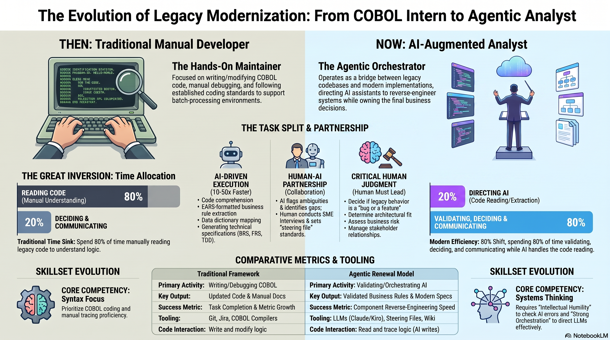

To eliminate documentation debt and accelerate modernisation, we propose a four-step path that transforms "black box" legacy systems into transparent, modern assets.

Four Steps to Modernisation
- Selection Identify a high-priority batch process — an eligibility check, data load, or financial reconciliation component. Choose something self-contained enough to demonstrate value quickly, complex enough to prove the methodology.
- Generation Execute an AI session to produce a full Component Specification and Knowledge Wiki. One working session delivers the system overview, program inventory, data dictionary, file catalogue, job map, and complete BRS/FRS/TDD/GAPS specification set.
- Validation Resolve identified logic gaps (GAPS) with SME input, then run equivalence testing against production outputs. This is where human expertise confirms business intent — the AI identifies what the code does; your people determine if that's correct for current needs.
- Scaling Deploy this methodology across the broader estate. Each subsequent component takes approximately 2 hours (the wiki and project context already exist). Transform the entire legacy portfolio from opaque code into transparent, documented, modernisation-ready assets.
The Human-in-the-Loop Strategy
The AI accelerates the heavy lifting of analysis. It empowers rather than replaces your professionals:
| Role | Contribution |
|---|---|
| Business SMEs | Validate that extracted rules match current business intent. Resolve GAPS with domain knowledge. |
| Operations Teams | Provide representative production data for equivalence testing. Confirm runtime behaviours. |
| Technical Leadership | Make strategic architecture decisions — cloud vs. on-premises, event-driven vs. batch, language selection. |
| Quality Assurance | Execute equivalence tests before any "improvements" are considered. |
What a Pilot Looks Like
Scope: One batch process (typically 1–3 COBOL programs, one JCL job)
Duration: One working session for analysis + spec generation. 1–5 days for gap resolution (SME availability dependent).
Output: Complete knowledge wiki + component specification set (BRS, FRS, TDD in chosen language, GAPS)
Success criteria: Byte-for-byte equivalent output from modernised code, validated against production data
The Competitive Advantage of Speed
By adopting this approach, organisations can scale innovative solutions with unprecedented velocity. This methodology allows protection of decades of proven logic while ensuring future architecture is as transparent and accessible as the services it provides.
The question is no longer "can we reverse-engineer legacy COBOL?" — it's "how fast do we want to move?"